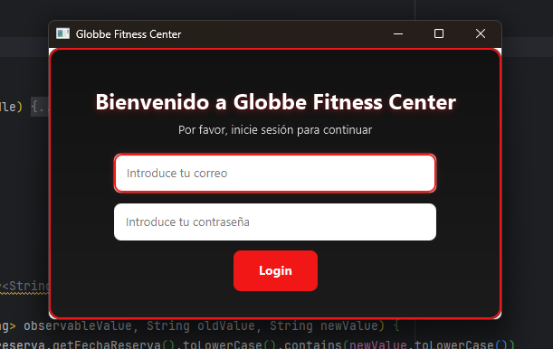
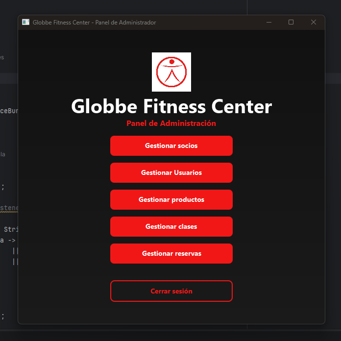
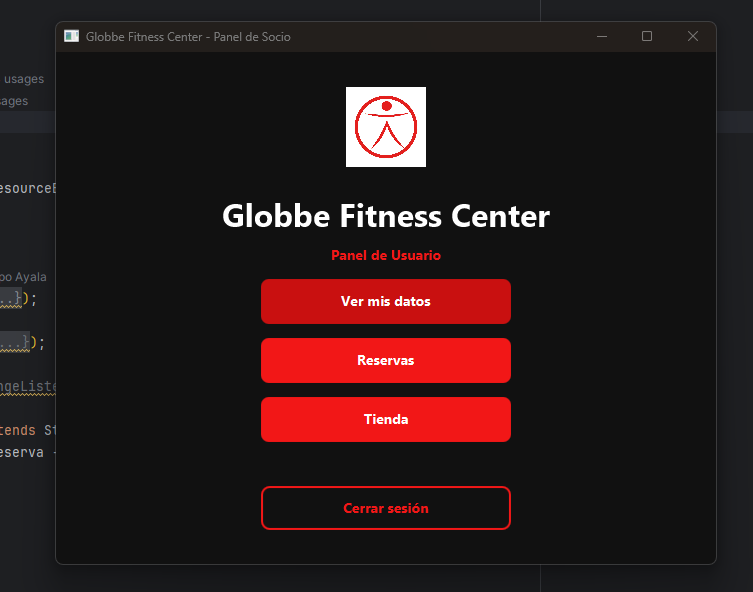

Proyecto
Globbe Fitness Center se centra en la gestión de socios, clases, reservas y productos en una aplicación conectada a una base de datos relacional con Java y JDBC.
Capturas

Login
Vista del Admin
Vista del UsuarioExplicación
La aplicación está pensada para resolver tareas habituales de un gimnasio: organizar información, consultar datos y relacionar entidades de forma clara y funcional.
Enlace al repositorio
https://github.com/miguel16ra/Globbe-Fitness-MiguelAngel-Restrepo-AyalaLo que he aprendido
- Diseñar una base de datos relacional coherente.
- Conectar Java con MySQL mediante JDBC.
- Organizar mejor el código y la documentación.
- XML y XSD.